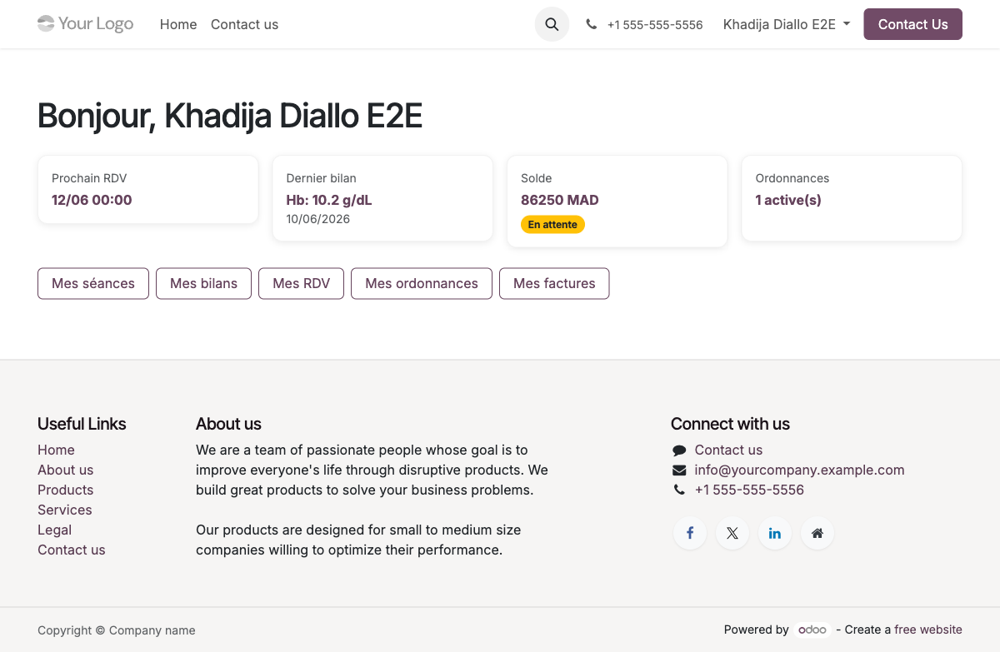
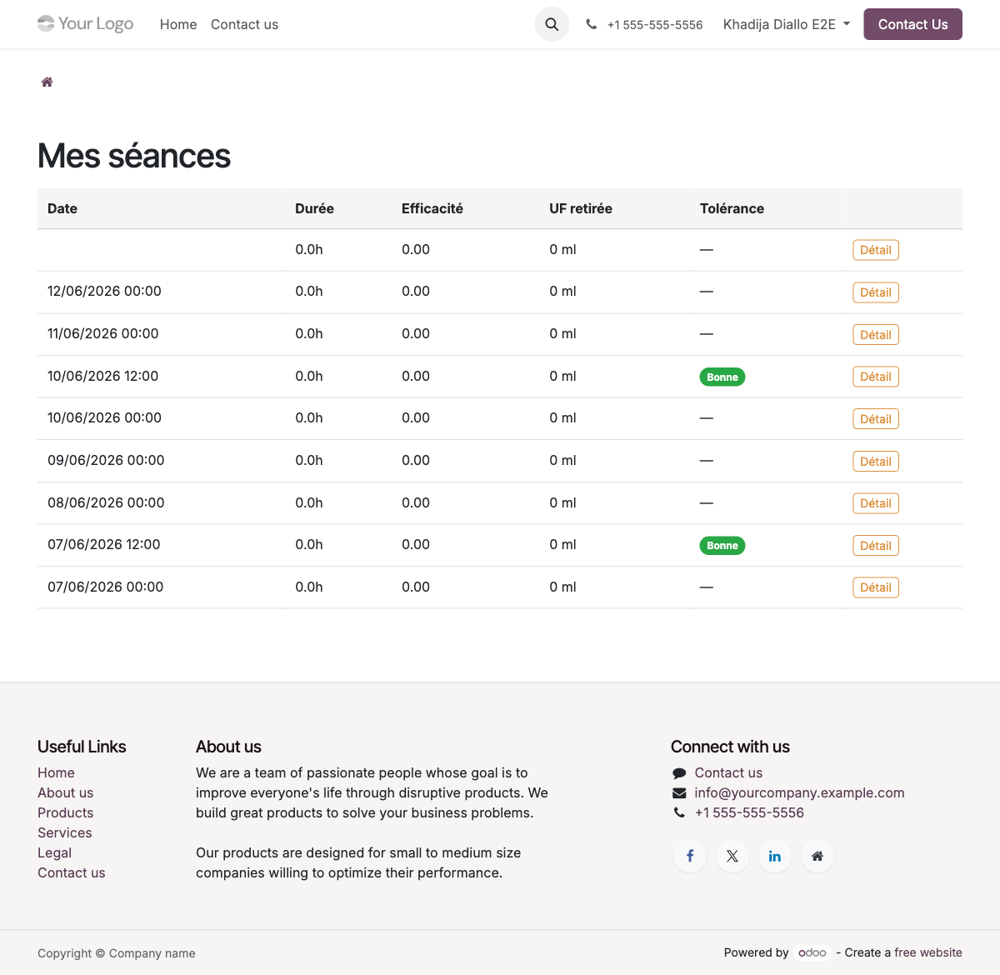
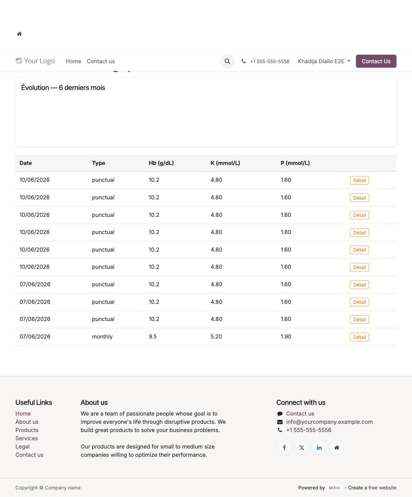

Le portail patient vous permet de consulter en toute autonomie vos informations médicales : suivi de vos séances de dialyse, résultats biologiques, rendez-vous, ordonnances et état de vos factures — le tout depuis votre navigateur, sans passer par le secrétariat.
Connexion au portail patient
Le portail patient est accessible depuis n'importe quel navigateur moderne, sur ordinateur ou sur téléphone mobile. Vous n'avez besoin que de votre adresse e-mail et de votre mot de passe communiqués par le secrétariat lors de votre inscription.
-
a
Ouvrez votre navigateur et accédez à
http://localhost:8069/web/login - b Saisissez votre adresse e-mail et votre mot de passe dans les champs correspondants
-
c
Cliquez sur Se connecter — vous êtes redirigé vers votre espace personnel
/my -
d
Pour accéder directement à votre tableau de bord néphro, naviguez vers
/my/nephro
Tableau de bord patient
Votre tableau de bord vous offre une vue synthétique de votre suivi médical. Quatre cartes résument les informations clés, et une barre de navigation rapide donne accès à toutes les sections détaillées.

/my/nephroCartes de résumé affichées :
Navigation rapide disponible :
/my/nephro
dans les favoris de votre navigateur pour y accéder en un clic après chaque connexion.
Mes séances de dialyse
Cette section affiche l'historique complet de vos séances de dialyse avec leurs paramètres techniques et leur résultat. Vous pouvez consulter le détail de chaque séance en cliquant sur le bouton Détail de la ligne correspondante.

/my/seancesExemple de données affichées (séances du 7 au 12 juin 2026) :
| Date | Durée | Efficacité | UF retirée | Tolérance | |
|---|---|---|---|---|---|
| 12/06/2026 | 4h00 | Kt/V 1.4 | 2.5 L | Bonne | Détail |
| 10/06/2026 | 4h00 | Kt/V 1.3 | 2.2 L | Bonne | Détail |
| 08/06/2026 | 4h00 | — | — | — | Détail |
| 07/06/2026 | 4h00 | Kt/V 1.2 | 1.8 L | Bonne | Détail |
Signification des colonnes :
- i Durée — durée effective de la séance de dialyse
- i Efficacité (Kt/V) — indicateur d'épuration rénale ; une valeur supérieure à 1.2 est considérée comme satisfaisante
- i UF retirée — volume de liquide retiré pendant la séance (ultrafiltration)
- i Tolérance — appréciation clinique de la séance par l'infirmière
Mes bilans biologiques
La section bilans regroupe tous vos résultats d'analyses biologiques. Un graphique d'évolution en haut de page vous permet de visualiser les tendances sur les 6 derniers mois, et le tableau liste chaque bilan avec ses valeurs clés.

Structure de la page :
- a Graphique d'évolution (haut de page) — courbes Hb, K et P sur les 6 derniers mois pour suivre les tendances
- b Tableau des bilans — liste chronologique avec les colonnes : Date, Type, Hb, K, P
- c Cliquez sur Détail pour accéder à l'ensemble des valeurs d'un bilan (créatinine, urée, calcium, phosphore complet…)
| Date | Type | Hb (g/dL) | K (mmol/L) | P (mmol/L) | |
|---|---|---|---|---|---|
| 05/06/2026 | monthly |
10.2 | 4.8 | 1.6 | Détail |
| 12/05/2026 | punctual |
9.8 | 5.1 | 1.9 | Détail |
| 05/04/2026 | monthly |
10.5 | 4.5 | 1.5 | Détail |
Signification des valeurs biologiques surveillées :
- i Hb (Hémoglobine) — indicateur d'anémie ; valeur cible en dialyse : 10–12 g/dL
- i K (Potassium) — électrolyte critique ; un taux trop élevé (hyperkaliémie) peut être dangereux
- i P (Phosphore) — doit être contrôlé pour éviter les complications osseuses et cardiovasculaires
Autres sections disponibles
En plus des séances et des bilans, votre portail donne accès à trois autres sections pour gérer votre suivi administratif et médical en autonomie.
Pages disponibles
Mes rendez-vous — /my/rdv
- a Consultez la liste de vos rendez-vous planifiés avec la date, l'heure et le médecin concerné
- b Cliquez sur Annuler pour annuler un rendez-vous — cette action est irréversible depuis le portail
Mes ordonnances — /my/ordonnances
-
a
Liste de vos ordonnances actives — l'ordonnance
PRO001est actuellement visible - b Cliquez sur une ordonnance pour voir le détail des médicaments prescrits, posologies et durée
- c Vous pouvez télécharger l'ordonnance au format PDF pour la présenter en pharmacie
Mes factures — /my/factures
- a Consultez l'état de chaque facture : montant, statut (brouillon / confirmée / payée) et date d'échéance
- b Votre solde total en attente est affiché en haut de la page
- c Cliquez sur une facture pour la consulter en détail ou la télécharger en PDF